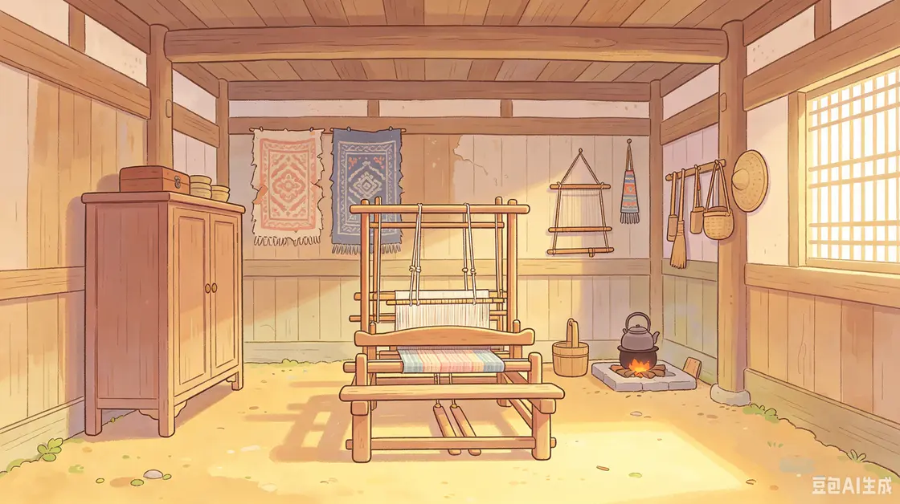
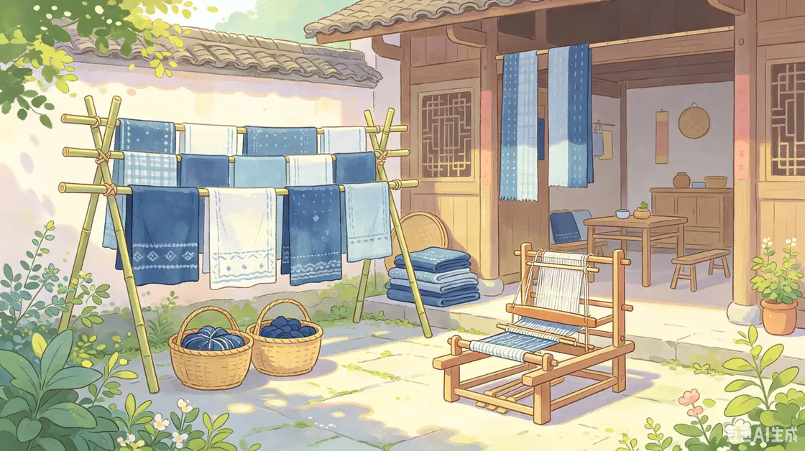
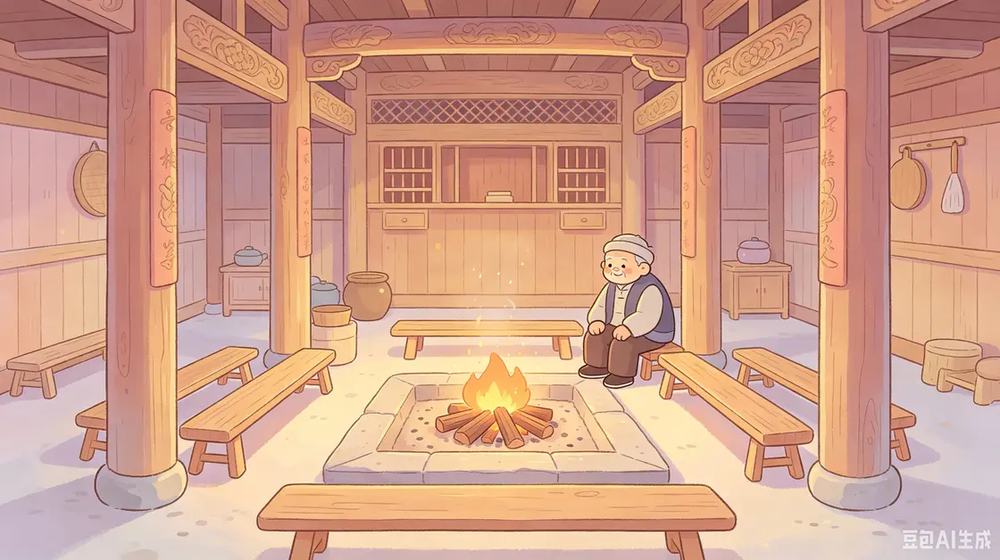
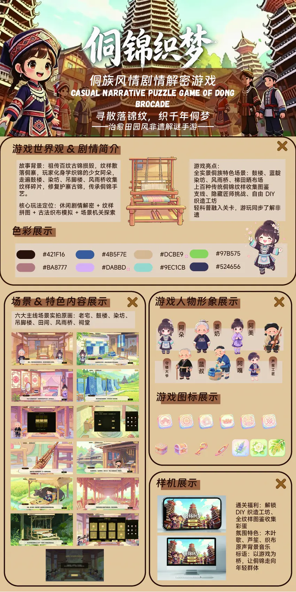

从小院到鼓楼


《侗锦织梦》设计展板
展板记录了项目的世界观、场景、角色和纹样图标，也保留了早期游戏界面与玩法构想。

试玩与素材下载
完整解压试玩 ZIP 后，双击里面的 锦纹寻踪.exe。运行时保留同目录下的游戏数据与运行库。
Windows 11 测试中可进入游戏场景，曾在加载后续场景后遇到 Unity 崩溃。



展板记录了项目的世界观、场景、角色和纹样图标，也保留了早期游戏界面与玩法构想。

完整解压试玩 ZIP 后，双击里面的 锦纹寻踪.exe。运行时保留同目录下的游戏数据与运行库。
Windows 11 测试中可进入游戏场景，曾在加载后续场景后遇到 Unity 崩溃。